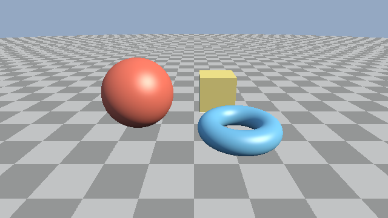

第 5 章 照明
第 2 章のレイマーチングで、レイが表面に当たる点は求められるようになった。この章では、その点の色を光の当たり方から計算する方法を説明する。まず表面の向き（法線）を SDF から求め、次に拡散反射、鏡面反射、環境光の順に照明を組み立てる。最後に、計算した値を画面に表示するためのガンマ補正を説明する。
影は次の第 6 章で扱う。この章のサンプルでは、光を遮る物体があっても影ができない。

05_lighting.frag の実行結果
05_lighting.frag をダウンロード ｜ ブラウザーで実行
法線の推定
第 2 章で述べたとおり、SDF の勾配 \(\nabla f\) は表面上で外向きの法線の方向を向く。そこで、法線 \(\hat{\mathbf{n}}\) を次のように求める。
SDF が厳密な距離でなくても、勾配はゼロ等値面に垂直なので、正規化すれば正しい法線が得られる。勾配は数値微分で近似する。
中心差分
最も素直な方法は、各軸方向の中心差分である。\(\mathbf{e}_x\)、\(\mathbf{e}_y\)、\(\mathbf{e}_z\) を各軸の単位ベクトル、\(h\) を小さな正の数とすると、次のようになる。
正規化するので係数 \(1/(2h)\) は省略できる。第 3 章と第 4 章のサンプルはこの方法を使っている。
93// SDF の勾配から法線を求める (第 5 章)
94vec3 calcNormal(vec3 p)
95{
96 const vec2 e = vec2(0.001, 0.0);
97 return normalize(vec3(map(p + e.xyy) - map(p - e.xyy),
98 map(p + e.yxy) - map(p - e.yxy),
99 map(p + e.yyx) - map(p - e.yyx)));
100}
e.xyy はスウィズルで vec3(0.001, 0.0, 0.0) を表す。同様に e.yxy と e.yyx はそれぞれ \(y\) 方向と \(z\) 方向の微小なベクトルになる。
四面体による差分
中心差分は SDF を 6 回評価する。SDF の評価はレイマーチングで最も重い処理なので、回数を減らしたい。正四面体の 4 頂点の方向
を使うと、4 回の評価で勾配を近似できる。\(f(\mathbf{p} + h\mathbf{k}_i)\) を 1 次の項までテイラー展開すると \(f(\mathbf{p}) + h\,\mathbf{k}_i \cdot \nabla f\) となる。ここで \(\sum_i \mathbf{k}_i = \mathbf{0}\)、\(\sum_i \mathbf{k}_i \mathbf{k}_i^{\mathsf{T}} = 4I\) であることを使うと、次の式が得られる。
第 5 章以降のサンプルは、この方法を使う。
80// 四面体の 4 頂点方向の差分から法線を求める
81vec3 calcNormal(vec3 p)
82{
83 const float h = 0.0005;
84 const vec2 k = vec2(1.0, -1.0);
85 return normalize(k.xyy * map(p + k.xyy * h).x +
86 k.yyx * map(p + k.yyx * h).x +
87 k.yxy * map(p + k.yxy * h).x +
88 k.xxx * map(p + k.xxx * h).x);
89}
差分の幅 \(h\) が大きすぎると細かい形状がぼやけ、小さすぎると浮動小数点数の丸め誤差によって法線が乱れる。サンプルでは、シーンの大きさ（1 程度）に対して \(h = 0.0005\) としている。
照明モデルの準備
本資料では、光の強さを放射輝度（ある方向から届く光の強さ）で考え、RGB の 3 成分で表す。光源として、太陽のように十分遠くにある 平行光源 を 1 つ置く。平行光源は、すべての点に同じ方向から同じ強さの光が届く光源である。
以降の説明では、表面上の点 \(\mathbf{p}\) で次のベクトルを使う。いずれも単位ベクトルである。
記号 |
コードの変数 |
意味 |
|---|---|---|
\(\hat{\mathbf{n}}\) |
|
法線 |
\(\hat{\mathbf{l}}\) |
|
表面から光源への方向 |
\(\hat{\mathbf{v}}\) |
|
表面から視点への方向（\(-\hat{\mathbf{d}}\)） |
\(\hat{\mathbf{h}}\) |
|
ハーフベクトル（後述） |
また、表面が光をどれだけ拡散反射するかを RGB ごとの反射率で表し、これを アルベド と呼ぶ。サンプルでは、関数 albedoOf がマテリアル ID からアルベドを返す。
91// マテリアル ID から拡散反射率 (アルベド) を決める
92vec3 albedoOf(float mat, vec3 p)
93{
94 if (mat == MAT_GROUND) {
95 // 1 辺 1 の市松模様
96 float checker = mod(floor(p.x) + floor(p.z), 2.0);
97 return mix(vec3(0.25), vec3(0.45), checker);
98 }
99 if (mat == MAT_SPHERE) {
100 return vec3(0.7, 0.15, 0.1);
101 }
102 if (mat == MAT_TORUS) {
103 return vec3(0.15, 0.45, 0.7);
104 }
105 return vec3(0.7, 0.6, 0.2);
106}
拡散反射
紙や漆喰のようにつやの無い表面は、受けた光をあらゆる方向に均等に反射する。このような反射を ランバート反射 と呼ぶ。ランバート反射では、表面の明るさは見る方向によらず、光の入射角 \(\theta\) の余弦 \(\cos\theta = \hat{\mathbf{n}} \cdot \hat{\mathbf{l}}\) に比例する。光が斜めに当たるほど、単位面積あたりに受ける光が減るためである。
アルベド \(\rho\)、光源の強さ \(\mathbf{E}\) を使うと、拡散反射による色は次のようになる。
物理的には、ランバート反射の BRDF は \(\rho/\pi\) であり、式に \(1/\pi\) が現れる。本資料のサンプルでは、この係数を光源の強さ SUN_COLOR に含めて省略している。\(\max\) をとるのは、裏側から光が当たる面（\(\hat{\mathbf{n}} \cdot \hat{\mathbf{l}} < 0\)）を 0 にするためである。
鏡面反射
プラスチックや塗装面のように、つやのある表面には光源の映り込み（ハイライト）が現れる。この鏡面反射を、Blinn-Phong モデルで近似する。視点方向と光源の方向の中間の方向 \(\hat{\mathbf{h}}\) （ハーフベクトル）を
とすると、鏡面反射の強さは次の式で表される。
表面が完全な鏡であれば、\(\hat{\mathbf{h}}\) が法線と一致するときに光源が映る。指数 \(s\) は表面のなめらかさを表し、大きいほどハイライトが小さく鋭くなる。サンプルでは \(s = 32\) としている。
この式のままでは、\(s\) を大きくするとハイライトの総エネルギーが小さくなる。エネルギーを保つには \((s + 8)/(8\pi)\) 程度の正規化係数を掛けるが、サンプルでは簡単のために定数 0.5 を掛けている。また、光が当たらない面にハイライトが出ないように、拡散反射の項 \(\max(\hat{\mathbf{n}} \cdot \hat{\mathbf{l}}, 0)\) を掛けている。
環境光
現実の物体は、光源から直接届く光だけでなく、空や周囲の物体で散乱した光も受けている。これらをまとめて環境光と呼ぶ。環境光を無視すると、光源の当たらない面が真っ黒になってしまう。
屋外のシーンでは、環境光の大部分は空から届く 天空光 である。上を向いた面ほど空の広い範囲が見えるので、多くの天空光を受ける。サンプルでは、この性質を次の式で近似する。
\(\mathbf{S}\) は天空光の強さ（SKY_COLOR）である。真上を向いた面（\(n_y = 1\)）で 1、真下を向いた面（\(n_y = -1\)）で 0 になる。
照明の合成
以上の 3 つの項を足し合わせたものが、この章の照明モデルである。
110vec3 shade(vec3 p, vec3 rd, float mat)
111{
112 vec3 n = calcNormal(p);
113 vec3 v = -rd; // 表面から視点への方向
114 vec3 h = normalize(LIGHT_DIR + v); // ハーフベクトル
115 vec3 albedo = albedoOf(mat, p);
116
117 // ランバート拡散反射
118 float diffuse = max(dot(n, LIGHT_DIR), 0.0);
119 // Blinn-Phong 鏡面反射 (光が当たらない面では 0 にする)
120 const float shininess = 32.0;
121 float specular = pow(max(dot(n, h), 0.0), shininess) * diffuse;
122 // 天空光: 上を向いた面ほど多く受ける
123 float sky = 0.5 + 0.5 * n.y;
124
125 vec3 col = albedo * (SUN_COLOR * diffuse + SKY_COLOR * sky);
126 col += SUN_COLOR * specular * 0.5;
127 return col;
128}
照明の計算に使う定数は、ファイルの先頭で定義している。光源の強さが 1 を超えているのは、明るい屋外を表すためである。1 を超えた値の扱いは第 7 章のトーンマッピングで説明する。
9const vec3 LIGHT_DIR = normalize(vec3(0.6, 0.7, 0.4)); // 光源の方向 (表面から光源へ)
10const vec3 SUN_COLOR = vec3(1.3, 1.2, 1.0); // 平行光源の放射輝度
11const vec3 SKY_COLOR = vec3(0.3, 0.4, 0.55); // 天空光 (環境光) の放射輝度
ガンマ補正
照明の計算は、光の強さに比例する値（線形な値）で行う必要がある。光の強さを足したり掛けたりする計算は、線形な値でなければ物理的な意味を持たないからである。
一方、一般的なディスプレイは、入力された値 \(V\) に対しておよそ \(V^{2.2}\) に比例する明るさで表示する（sRGB の特性）。そのため、線形な値 \(L\) をそのまま出力すると、中間の明るさが暗く表示されてしまう。これを補正するため、出力の直前に次の変換を行う。この変換を ガンマ補正 と呼ぶ。
141void mainImage(out vec4 fragColor, in vec2 fragCoord)
142{
143 vec2 p = (2.0 * fragCoord - iResolution.xy) / iResolution.y;
144
145 vec3 ro = vec3(0.0, 3.0, 6.0);
146 vec3 ta = vec3(0.0, 0.5, 0.0);
147 vec3 rd = setCamera(ro, ta) * normalize(vec3(p, 2.0));
148
149 vec3 col = SKY_COLOR; // 背景は天空の色
150 vec2 hit = raymarch(ro, rd);
151 if (hit.y > 0.0) {
152 col = shade(ro + hit.x * rd, rd, hit.y);
153 }
154
155 // 線形な放射輝度をディスプレイ用の値に変換する (ガンマ補正)
156 col = pow(col, vec3(1.0 / 2.2));
157 fragColor = vec4(col, 1.0);
158}
sRGB の厳密な変換式は、暗い部分が線形で、それ以外がべき乗の区分的な関数であるが、指数 2.2 のべき乗で十分よく近似できる。同じ理由で、アルベドなどの色を画像や色見本から取り込むときは、逆の変換 \(L = V^{2.2}\) で線形な値に戻してから計算に使う。